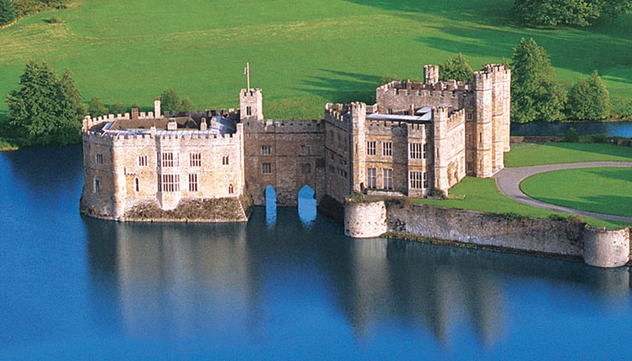

Welcome to Kent
Explore the history, heritage, and hidden gems of the Garden of England

Explore the Heart of England's Heritage
Welcome to Kent, the Garden of England—a place where history meets vibrant culture. From ancient castles and iconic cathedrals to lush landscapes and charming coastal towns, Kent offers endless opportunities for exploration. Discover centuries-old stories, breathtaking sights, and exciting events throughout the county. Whether you're here for a family day out or an immersive journey through England's past, Kent is ready to enchant you.
Explore Kent's Highlights
Historical Towns
Discover unique towns across Kent, each with a fascinating story to tell.
Learn More